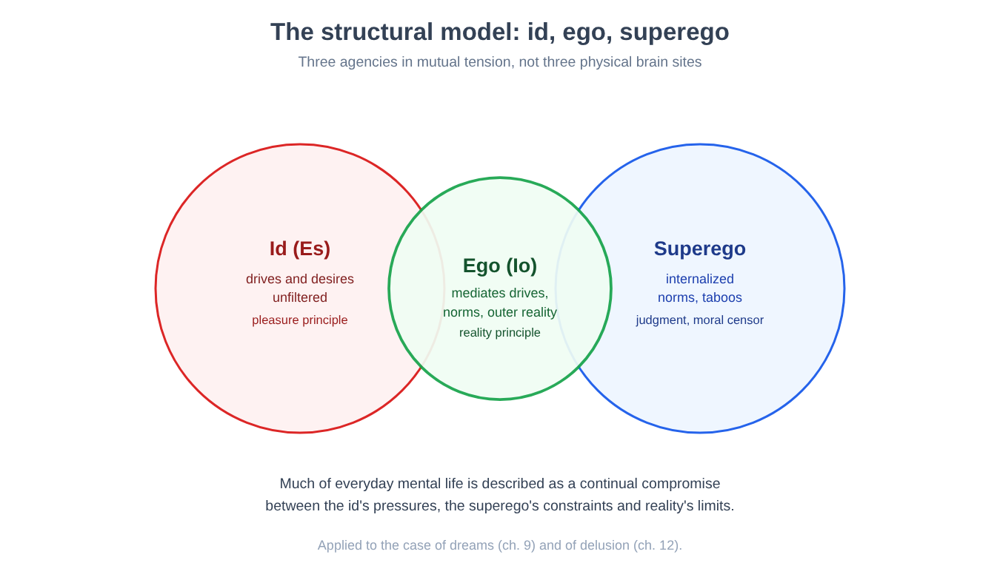
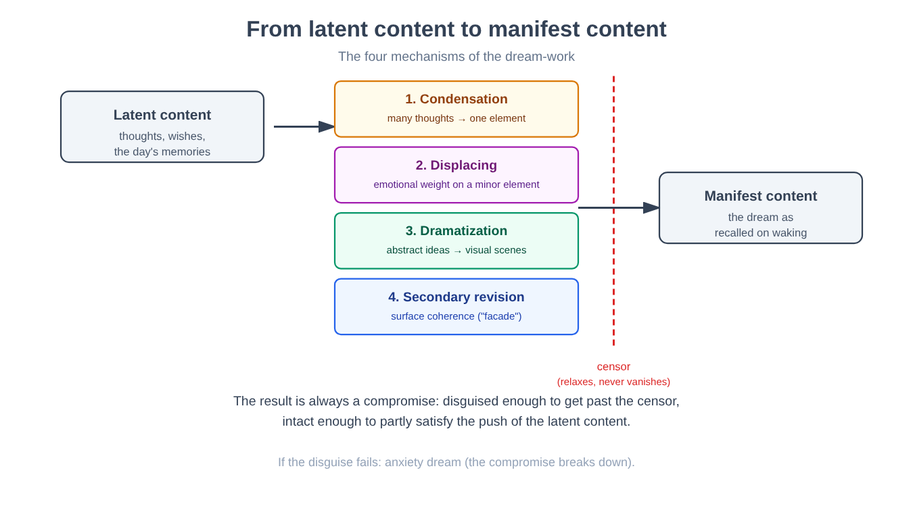
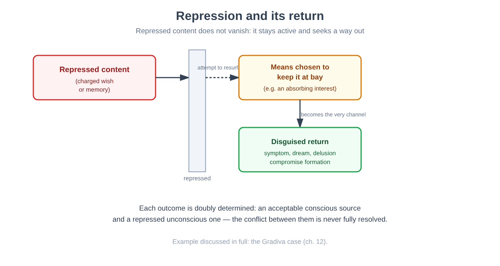
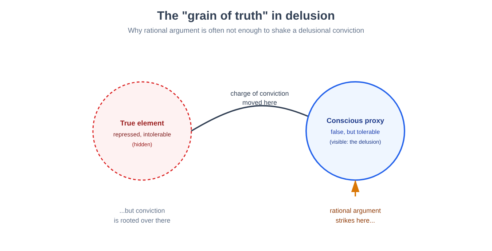
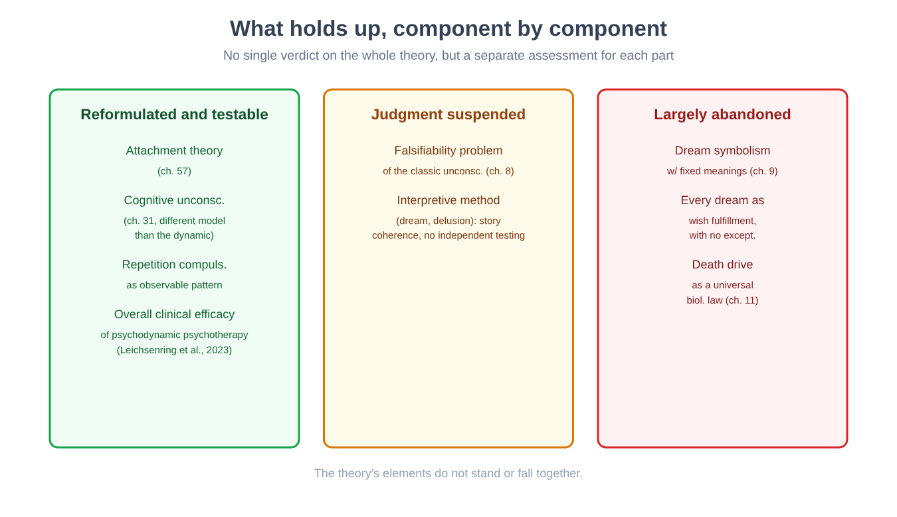

Part II. The mind as depth: the psychoanalytic tradition
Chapter 7 — Before psychology: the mind as a philosophical object
[IN A NUTSHELL]
Before a single laboratory devoted to the study of the mind existed, the question of how it works was the territory of philosophy. This chapter tells the story of the transition, at the end of the nineteenth century, from a mind studied from an armchair to a mind measured in a building with instruments — and immediately shows the limits of that first measurement, picking up where chapter 1 left off.
In chapter 1 we left a question hanging: if everyone's spontaneous introspection is unreliable, what happens if we try to turn it into a rigorous, trained, repeatable method — rather than a simple, occasional report? That is exactly the attempt that occupied psychology in its first decades as an independent discipline, and its results were, as we will see, instructive precisely in their partial failure.
From a philosophical question to a measurable one
For centuries, asking how ideas arise, whether the mind is divisible into parts or unitary, and where knowledge comes from had been a problem for philosophy, not for experimental science. One tradition in particular prepared the ground for scientific psychology: associationism, the thesis that the complex contents of the mind — ideas, memories, concepts — are formed by combining simpler elements according to regular laws, in particular contiguity in time or space (two things often perceived together tend to be remembered together) and similarity. Associationism was still a philosophical program, but it had a new and important feature: it proposed general laws, testable in principle, instead of isolated intuitions.
A second, more directly experimental antecedent was psychophysics: the quantitative study of the relationship between the physical intensity of a stimulus (the brightness of a light, the weight of an object) and the intensity of the perceived sensation. Psychophysics showed, for the first time, that one aspect of the mind — perception — could be measured with the same numerical precision as a physical phenomenon, opening the door to everything we will see in chapter 28, where its fundamental law will be presented in full.
The first laboratory and introspection as a trained method
In 1879, in Leipzig, what is generally considered the first laboratory devoted entirely to experimental psychological research was founded. The move underlying this laboratory was exactly the one anticipated in chapter 1: to transform introspection from a spontaneous, occasional report into a standardized method. Observers trained for months learned to break down a conscious experience — for example, the perception of a sound — into its elementary constituent elements (intensity, quality, duration), reporting these components with an agreed technical vocabulary, under rigorously controlled and repeated experimental conditions.
[THE EXPERIMENTAL DESIGN]
What they wanted to find out. Whether a complex conscious experience (for example, perceiving a musical chord) could be reliably broken down into its basic sensory elements through trained introspective reports.
What was manipulated. The stimulus presented (for example, the frequency or intensity of a sound), under controlled laboratory conditions.
What was measured. The highly standardized verbal report that the trained observer gave of his or her own immediate conscious experience, broken down according to a predetermined technical vocabulary.
Which result would have disproved the approach. If different, equally trained observers, faced with the same stimulus, had systematically reported different and mutually incompatible elements, the very idea that trained introspection produced objective data would have been called into question.
What happened. Exactly that: different laboratories, with different training traditions, often arrived at divergent breakdowns of the same experience, with no independent way of establishing which report was correct. One case that became emblematic concerned the attempt to establish whether thought could occur "without images" (without associated sensory content) — one laboratory systematically denied it, another systematically confirmed it, and no experiment independent of the reports themselves made it possible to adjudicate between the two positions.
[CONTROVERSIAL QUESTION]
The problem here is not the same as in chapter 1. There the problem was confabulation: a wrong explanation experienced as correct. Here the problem is subtler: even assuming complete good faith and maximal training, there was no way to check an introspective report by comparing it with independent data — exactly the requirement of construct validity discussed in chapter 3. A thermometer can be calibrated by comparing it with another, independent thermometer; a trained observer had nothing to calibrate against except another observer trained in the same tradition.
Why this attempt was not a waste
It would be a mistake to read this first attempt as a dead end with no legacy. The Leipzig laboratory established, before anything else, that the mind could be the object of systematic, repeated measurement, not just isolated philosophical reflection — a precondition without which none of the later chapters of this book could have existed. It also established, by contrast and just as importantly, the limits of introspection even in its most disciplined form: an observation that would lead, in the first half of the twentieth century, to the radical rejection of all introspective data by behaviorism (Part III) and, by an entirely different route, to the proposal that much of mental life is in principle beyond the reach of awareness — the hypothesis at the center of the next chapter.
Another, almost contemporary line deserves a mention: in the United States an approach developed that was less interested in breaking experience down into static elements and more interested in asking what purpose a given mental process serves in the person's adaptation to his or her environment — an orientation known as functionalism, which would shift attention from the structure of consciousness to its function, an interest in what behavior does rather than in what consciousness contains.
[KEY POINT OF THE CHAPTER]
• Associationism (general laws for combining ideas) and psychophysics (quantitative measurement of perception) prepared the ground for an independent experimental psychology.
• The first dedicated laboratory (1879) turned introspection into a trained, standardized method.
• The limit of this method was not the confabulation of chapter 1, but the lack of an independent way of verifying introspective reports, even when they were given in good faith by trained observers.
• This limit opened two opposite paths, both of which the book follows: the total rejection of inner data (behaviorism, Part III) and the hypothesis of a mind largely inaccessible to consciousness itself (psychoanalysis, starting from the next chapter).
Chapter 8 — The hypothesis of the unconscious
[IN A NUTSHELL]
If introspection, even when trained, cannot access all of mental life, perhaps it is because part of that mental life is, in principle, not accessible to consciousness. This chapter sets out the hypothesis of the unconscious, what it was meant to explain, and why its very explanatory power — able to account for almost everything — is also its most serious methodological problem.
Have you ever called someone by the wrong name — perhaps that of an ex, or of someone you were thinking about at that moment without knowing it? Common sense dismisses the episode as a simple lapse of attention. Another tradition, which occupies this chapter and the five that follow, proposed instead to take it seriously as a clue: what if an error of this kind were not random, but the product of an active thought, present in the mind but not admitted to consciousness?
A hypothesis introduced out of explanatory necessity
The psychoanalytic hypothesis of the unconscious did not arise as abstract philosophical speculation about the nature of the mind, but as an attempt to account for a set of clinical phenomena that the model of the mind as pure consciousness could not explain. Three categories of phenomena were central:
Parapraxes — slips of the tongue, forgetting names or appointments, slips of the pen — which, in the psychoanalytic reading, are not random noise in the cognitive system but the product of a conflicting intention: one thought pressing to be expressed while another obstructs it, with the compromise between the two surfacing in the error itself.
The symptoms of the neuroses then observed in clinical settings — paralyses with no identifiable neurological cause, for example — which seemed to express in bodily form a psychological content that the patient was unable to recognize consciously as his or her own.
Selective forgetting: the fact that certain memories, often the most emotionally charged, were systematically harder to recall than others, in a way that could not be explained by the simple decay over time that we will discuss in chapter 38.
To account for these three phenomena with a single principle, the hypothesis proposed (Freud, from the 1890s onward) was that the mind contains contents — thoughts, desires, memories — that are active and capable of influencing behavior and experience, but are not admitted to conscious introspection. Not simply forgotten in the ordinary sense of the word, but kept out of consciousness by an active process, which chapter 10 will call repression.
Why it is a hard hypothesis to test
Here the chapter's move becomes interesting and honest rather than apologetic: the hypothesis of the unconscious has a methodological problem that the other hypotheses encountered so far in the book do not have to the same degree. An experiment, as we saw in chapter 2, must specify in advance which result would disprove it. The unconscious, as originally formulated, is hard to disprove: any behavior — including the absence of a predicted symptom, which can always be attributed to a particularly effective defense — can be made compatible with the hypothesis through a subsequent interpretation. This problem, known as the falsifiability problem — the philosophical requirement that a scientific theory specify conditions under which it would be considered false — was raised forcefully by the philosophy of science from the 1930s onward (Popper, 1934), and remains one of the most debated points about this entire tradition, as we will see in full in chapter 13.
[MIND THE LEAP]
Saying that a theory has a falsifiability problem is not the same as saying that it is false, or that the phenomena it describes (the existence of systematic parapraxes, the existence of mental contents not accessible to consciousness) are invented. The problem is more specific: it concerns whether the theory, in its classical form, makes it possible to distinguish in advance an outcome that would confirm it from one that would disprove it. As we will see in chapter 31, the idea that much mental processing takes place outside conscious awareness was later taken up, in a different and more easily testable form, by cognitive psychology — an interesting case of two traditions very far apart in method converging on a similar intuition.
A model of the mind in structural conflict
The hypothesis of the unconscious did not remain isolated: it developed into a broader model of the mind as a structure divided into agencies in mutual tension — an id, the bearer of unfiltered drives and desires; a superego, the internalization of learned norms and prohibitions; and an ego that mediates between the pressures of the one, the constraints of the other, and the demands of external reality. In this model, much of everyday psychological life is described as the product of a continuous compromise between conflicting agencies — an idea we will meet again, applied to the specific case of the dream, in the next chapter, and applied to the case of delusion in chapter 12.

[MINI-TIMELINE]
The hypothesis of the unconscious, formulated in its classical terms between the end of the nineteenth century and the first decades of the twentieth, predates by several decades the discovery, discussed in chapter 30 and chapter 31, that a substantial part of the brain's information processing — from perception to decision — does in fact take place outside conscious awareness. Chapter 31 will explicitly compare the two models of the "unconscious," the psychoanalytic and the cognitive, showing where they resemble each other and where they are, in fact, very different hypotheses despite the shared name.
[KEY POINT OF THE CHAPTER]
• The hypothesis of the unconscious arose to explain three phenomena: parapraxes, symptoms with no evident organic cause, and selective forgetting.
• It proposes that active mental contents can remain outside consciousness because of an active process (repression, chapter 10), not simple forgetting.
• The falsifiability problem — the difficulty of specifying in advance an outcome that would disprove the hypothesis — is the most debated methodological issue in this tradition, taken up in full in chapter 13.
• The structural model of id/ego/superego describes psychological life as a continuous compromise between conflicting agencies, an idea applied to dreams in chapter 9 and to delusion in chapter 12.
• A hypothesis that is in some respects related — that much mental processing is unconscious — has been reformulated in testable terms by cognitive psychology (chapters 30–31), with important differences from the psychoanalytic version.
Chapter 9 — The dream work
[IN A NUTSHELL]
If the unconscious exists, the dream was proposed as one of the most direct routes to it. This chapter sets out the method by which classical psychoanalysis interprets a dream — not as a content already complete, but as the product of an active transformation, the dream work, whose four mechanisms the chapter describes.
Almost everyone, on waking, has had the feeling that their dream "made no sense": scenes following one another without a clear narrative logic, people turning into other people, impossible places. The proposal at the center of this chapter is that this lack of sense is only apparent: the dream as we remember it — the manifest content — would be the result of a systematic transformation of a more extensive and more coherent starting material, called the latent content: the set of thoughts, desires and memories (partly elements from the previous day, partly older desires) that the dream work processes and disguises.
The four mechanisms of the dream work
The dream work is, according to this theory (Freud, The Interpretation of Dreams, 1899-1900), the psychological process that transforms the latent content into the manifest content, through four distinct mechanisms.
Condensation compresses several latent thoughts into a single element of the manifest dream, which is thus overdetermined — that is, traceable, in analysis, to more than one source at the same time. A single dream character can condense the traits of several real people; a single image can fuse several distinct memories.
Displacement redistributes emotional intensity: the most psychologically significant content of a latent thought is often transferred onto an apparently secondary element of the manifest dream, while the central element of the dream may turn out, surprisingly, to be emotionally neutral. This mechanism — described as a kind of "transvaluation of psychical values" — explains why a dream can seem to focus on a trivial detail while the real emotional weight lies elsewhere, displaced.
Dramatization (in Freud, considerations of representability) converts abstract and verbal thoughts into concrete, visual scenes, with complex logical relations (cause and effect, negation, the alternative "either this or that") reduced to a much poorer pictorial vocabulary — which is why dreams, read as logical narrative sequences, often seem to lack connectives and argumentative structure.
Secondary elaboration comes into play last, imposing a surface coherence on material that has already been condensed, displaced and dramatized — building what is called the "façade of the dream": an apparently sensible story that masks, rather than reveals, the work of transformation that has taken place beneath it.

[THE EXPERIMENTAL DESIGN]
The method, set out as a procedure. The patient reports the manifest content of the dream. The analyst does not interpret it symbolically in a direct way, element by element according to a fixed code, but asks the patient to produce free associations — everything that comes to mind, without censorship or selection, starting from each element of the dream. The latent content is reconstructed by following the patient's chains of association, not by applying a universal key.
The problem for independent verification. This method poses a structural difficulty, distinct from the falsifiability problem already discussed in chapter 8: the reconstructed latent content depends substantially on the associations the patient provides during the session itself, which are in turn guided by the analyst's questions. There is no way, within the method itself, to independently verify that the proposed reconstruction corresponds to the psychological process that actually generated the dream, rather than being a plausible narrative constructed after the fact by patient and analyst together — a risk in some ways comparable, albeit in an entirely different context, to the confabulation discussed in chapter 1.
Why the dream should disguise itself
It remains to explain why, if the latent content exists, it does not present itself directly to consciousness during sleep. The proposed answer invokes a censorship: a psychological barrier, the same one that in waking life keeps repressed contents out of consciousness (chapter 8), which relaxes during sleep but does not disappear entirely. What emerges in the dream is therefore always a compromise: disguised enough to be tolerated by the censorship, intact enough to satisfy, at least in part, the pressure of the latent content to find expression. In cases where the disguise fails and a content emerges too thinly masked, the proposed result is the anxiety dream: the sleeper wakes up frightened, because the compromise has not held.
This reading leads to a more general and more demanding thesis: in this theory, the dream would always represent, in disguised form or not, the fulfillment of a wish — wish-fulfillment. In children's dreams, according to this theory, the wish often appears in a direct and recognizable way (the child who dreams of the sweet that was denied him during the day); in most adult dreams, the wish would be unrecognizable until condensation, displacement and dramatization are, so to speak, undone by analysis.
A complementary function attributed to the dream is that of guardian of sleep: by hallucinating the satisfaction of a disturbing internal wish, or by neutralizing an external stimulus (a noise, a physical sensation), the dream would allow the sleeper to go on sleeping instead of waking up — a kind of night watchman that wakes the sleeper, through anxiety, only when the disturbance is judged too serious to be handled otherwise.
[CONTROVERSIAL QUESTION]
The thesis that every dream, without exception, represents a wish-fulfillment — even when it appears as a terrifying nightmare — is one of the most ambitious and most contested claims of this theory, and the theoretical framework itself acknowledges partial exceptions (the recurrent dreams of trauma, which we will see addressed directly in chapter 11, where the theory itself had to revise this thesis). Contemporary sleep research (chapter 26) describes the dream with largely different tools and questions — the activation of specific neural networks during REM sleep, the role of dreaming in memory consolidation — and in general does not treat the disguise of a repressed wish as the main explanation for most dream content. The two perspectives are not necessarily incompatible on every point, but they answer questions that are different enough to make a direct, point-by-point comparison harder than it seems.
Dream symbolism: A later and more controversial addition
Alongside the individual mechanisms of the dream work, this theory also proposed a distinct level of dream symbolism: a repertoire of fixed, culturally shared correspondences (for example, elongated objects as a symbolic representation of male sexual organs) that would not be the product of an individual dreamer's personal associations, but a preexisting vocabulary, also traceable in myths and folk tales. This part of the theory, which assigns systematic weight to sexual content in adult dream life, is among the most speculative parts of the whole framework and the least supported by independent verification, and in judging its soundness it should be kept distinct from the mechanisms of condensation and displacement described above, which remain — as a description of how material is transformed, regardless of what it is presumed always to contain — a more lasting conceptual contribution; sleep research (chapter 26) approaches the dream with different tools, without having verified these mechanisms.
[KEY POINT OF THE CHAPTER]
• The manifest (remembered) dream is the product of a transformation of a more extensive latent content, through the dream work.
• The four mechanisms are condensation, displacement, dramatization and secondary elaboration.
• The method of free association reconstructs the latent content, but with no independent way of verifying the reconstruction — a problem distinct from, but related to, that of falsifiability (chapter 8).
• Censorship explains why the latent content presents itself in disguise; the dream as wish-fulfillment and as guardian of sleep are the two proposed functions.
• Dream symbolism with fixed, especially sexual, content is the most speculative and least testable part of the theory, to be distinguished from the four general mechanisms of the dream work.
Chapter 10 — Repression, defenses, the return of the repressed
[IN A NUTSHELL]
Repression is not simple forgetting: in this theory, it is an active process that keeps a content out of consciousness without destroying it. This chapter shows why the repressed content never really disappears, and how it tends to "return" — often through the very means chosen to keep it at bay.
Chapter 8 introduced the unconscious as a container of thoughts not admitted to consciousness. This chapter deals with the specific mechanism that keeps them there: repression, defined as a particular kind of forgetting, distinct from the ordinary forgetting that we will discuss in chapter 38. A memory forgotten in the everyday sense of the word is, so to speak, switched off: no longer accessible, but also no longer psychologically active. A repressed content, in this theory, instead remains active — it continues to exert an influence on behavior and experience, while remaining inaccessible to direct introspection.
An unexpected principle: the repressed returns through its own means
One of the most original aspects of this theory is the idea that the repressed content does not necessarily return through a breach in the defense that held it back, but often precisely through that same defense. The mechanism chosen to keep an unacceptable thought at bay can become, paradoxically, the channel through which that thought manifests itself again, in transformed form. An intellectual interest cultivated apparently as a distraction from an unacceptable desire can, over time, fill up with contents that point back to that very desire — not in spite of the interest chosen as a defense, but precisely through it.
[COMMON BELIEF]
"Repressing a thought" in everyday language often simply means "stopping thinking about it," through a conscious effort of will. In the theory set out here, repression is by definition a process that operates outside awareness: if a person consciously chose not to think about something, that would not be repression but voluntary suppression — a different, distinct phenomenon, more easily studied with experimental methods, which we will encounter in chapter 38 in connection with the mechanisms of forgetting.
Delusion as a limiting case
A particularly instructive case of the return of the repressed is that of delusion, which chapter 12 will discuss in full: in this reading, a delusion is not an arbitrary or meaningless thought, but a compromise formation in which a genuinely repressed element — often a desire or an affective memory — re-emerges transformed, mixed with a more acceptable conscious content, held with a conviction all the more tenacious the more its true source remains inaccessible. Here we anticipate only the general principle: we will see in chapter 12 how this reading was applied in detail to a concrete case.

What remains of it in contemporary research
The notion that emotionally charged content may be systematically harder to recall than neutral content, and that this process may occur without conscious intention, has not remained confined to classical psychoanalytic theory: experimental research on memory (chapter 38) has developed paradigms for studying related phenomena — retrieval-induced forgetting, motivated suppression — with experimental designs that are falsifiable in the full sense discussed in chapter 2, distinct from the mechanism of repression described here but not entirely foreign to it in spirit. Chapter 38 will return to this comparison explicitly, asking how much of classical repression survives, in modified and testable form, in those paradigms.
[KEY POINT OF THE CHAPTER]
• Repression is an active forgetting: the repressed content remains psychologically active, unlike in ordinary forgetting.
• The repressed content tends to return, often precisely through the means chosen to keep it at bay — not necessarily through a gap in the defense.
• Delusion, discussed in full in chapter 12, is the limiting case of this return: a compromise formation between the repressed and the conscious.
• Repression must be distinguished from voluntary suppression, a different and conscious process.
• Experimental research on memory (chapter 38) studies related phenomena with falsifiable methods, in a comparison that chapter will take up explicitly.
Chapter 11 — Drives, repetition, aggression
[IN A NUTSHELL]
If the mind always and only seeks to reduce tension and obtain pleasure, why do some people repeat painful experiences, apparently with no benefit at all? This chapter sets out the most speculative and most controversial part of the entire psychoanalytic edifice: a hypothesis that starts from a solid clinical observation but arrives at one of the most ambitious and least testable theoretical constructions of this tradition.
The pleasure principle and its limit
The starting point of this theory (Freud, Beyond the Pleasure Principle, 1920, which takes up concepts already formulated in 1900 and 1911) is the pleasure principle: the idea that mental processes are automatically regulated so as to avoid unpleasant tension and seek its reduction. The reality principle is a modification of it: the ego's capacity to tolerate delayed gratification, with a view to a greater and more secure pleasure in the future — postponement, not renunciation.
The problem that opens this chapter is that some clinical phenomena seem to contradict even the pleasure principle in its broadest form. Patients who had lived through traumatic events relived them in recurrent dreams, with distressing realism — a direct exception to the thesis, set out in chapter 9, that every dream represents a wish-fulfillment: here there is no visible wish fulfilled, only the almost literal repetition of the painful event.
[THE EXPERIMENTAL DESIGN]
The observation at the origin of the theory. A child of about a year and a half, observed while playing alone, continually repeats a simple game: he throws a reel tied to a string away from himself, uttering a sound interpreted as corresponding to "gone" (fort), then pulls it back and greets it with a sound interpreted as "there" (da) — the so-called Fort/Da game.
The proposed interpretation. The game is read as a repeated staging of the mother's departure and return — an event experienced passively by the child (who has no control over the mother's absences) and here transformed into an actively controlled event, in which it is the child himself who decides when the object disappears and when it returns.
Why it is a limiting case for the pleasure principle. Even granting that becoming active with respect to an event suffered passively brings a psychological benefit (a gain in control), the child repeats with particular insistence precisely the unpleasant part of the sequence — the disappearance of the object — not just the joyful part of its return. Hence the hypothesis of a drive to repeat that operates independently of, and sometimes against, the pursuit of immediate pleasure.
From observations of this kind — the child's game, traumatic dreams, and a third phenomenon observed in the course of treatment itself, in which patients seemed to repeat painful relational patterns from their past in their relationship with the analyst instead of simply remembering them — the existence of a repetition compulsion was proposed: a drive, located in the repressed unconscious, to repeat past experiences — especially painful and infantile ones — as present reality, rather than as memory. A drive described as more primitive than the pleasure principle, and capable of overriding it.
The most speculative step: the death instinct
From here the theory takes a further step, explicitly presented by its own author as more speculative than any other part of the edifice described so far. If every drive is by its nature conservative — that is, it tends to restore an earlier state, as the repetition compulsion itself shows — and if organic life in fact always ends in death from causes internal to the organism itself, then the deepest drive of every living being should be, paradoxically, the return to the inanimate state that precedes life: a death instinct (Todestrieb), whose ultimate aim would be death itself. In tension with this drive would stand Eros: the sexual drives generalized into a vital force of binding and increasing complexity, which postpones the return to the inorganic.
An even deeper principle, the Nirvana principle, is proposed as the most fundamental layer underlying the pleasure principle itself: the psychological tendency to reduce internal excitation to the lowest or most constant level possible.
[CONTROVERSIAL QUESTION]
The death instinct is, in all likelihood, the most contested hypothesis in the entire psychoanalytic tradition, openly contested even by later analysts belonging to the same tradition. The reasoning that supports it proceeds by biological analogy (the conservative character of the drives, death as an internal outcome of life) rather than by direct clinical observation, and it is explicitly presented, in the text that proposes it, as a speculative attempt whose limits the author himself openly acknowledges. In judging its soundness, it should be kept distinct from the repetition compulsion: the latter rests on clinical observations (traumatic dreams, the child's game, relational patterns repeated in therapy) that are relatively more solid, although these too are interpreted within a specific theoretical framework and have not been tested with the experimental designs of chapter 2.
A parallel worth Noting
There is a conceptual convergence worth pointing out explicitly, even though the traditions involved are radically different in method: the drive to repeat a behavior even when it stops producing an evident benefit is not unrelated to what we will see, with entirely different experimental tools, in connection with variable-ratio reinforcement schedules in chapter 17 — where a behavior (for example, gambling) can prove extremely resistant to extinction precisely because of its unpredictability, not because of a constant gain. The two explanations — one based on drives, the other on intermittent reinforcement — remain distinct and not interchangeable, but both grapple with the same behavioral puzzle: the persistence of a pattern that is no longer, or never entirely was, advantageous.
On the subject of aggression, this theory goes so far as to propose that sadistic and masochistic behaviors can be read as direct manifestations of the death instinct — in sadism, directed toward an external object; in masochism, turned back on the self. This specific application, too, shares the highly speculative character of the hypothesis from which it derives, and should be read with the same caution.
[KEY POINT OF THE CHAPTER]
• The pleasure principle regulates the mind toward the reduction of tension; the reality principle tolerates its postponement.
• Traumatic dreams and the Fort/Da game motivate the hypothesis of a repetition compulsion, more primitive than the pleasure principle.
• From here the theory proposes, in an explicitly speculative way, a death instinct in tension with Eros, and a Nirvana principle even deeper than the pleasure principle.
• The death instinct is the most contested part of the theory, even within the later psychoanalytic tradition itself.
• The persistence of behaviors that are no longer advantageous finds a conceptual parallel, not an equivalence, in the variable-ratio reinforcement schedules of chapter 17.
Chapter 12 — Delusion as a construction with a grain of truth
[IN A NUTSHELL]
This chapter applies to a concrete case the principles already encountered — repression, the return of the repressed, compromise formation — showing how, in this reading, a delusion is not an arbitrary thought but a construction elaborated around a genuinely repressed element, held with tenacious conviction precisely because that conviction has been displaced from its true object onto a more tolerable substitute.
Twofold determination and compromise formation
Chapter 10 introduced delusion as the limiting case of the return of the repressed. Here the mechanism is spelled out: every symptom, in this reading, has a twofold determination — one conscious and acceptable source, and one unconscious and erotic source — and since the conflict between the two is never fully resolved, the resulting compromise formation renews itself continually, instead of exhausting itself in a single episode.
A distinctive principle of this reading is that a delusion always contains a grain of truth: a genuinely repressed, authentic element, whose charge of conviction is, however, displaced — in the same sense of displacement encountered in chapter 9 in connection with dreams — from the true, unacceptable element onto a conscious substitute that is false but more tolerable. This explains, in this reading, a frequently observed clinical feature: the extreme difficulty of shaking a delusion with simple rational argument, because the argument strikes the conscious substitute, while the conviction is rooted in the true, repressed element that the argument does not reach.

[THE EXPERIMENTAL DESIGN]
The case analyzed. A psychoanalytic analysis (Freud, Delusions and Dreams in Jensen’s “Gradiva”, 1907) applied not to a real patient in treatment, but to a work of fiction — a procedure that makes it possible to set out the interpretive method with didactic clarity, although, by the very nature of the material, it cannot be subjected to independent clinical verification.
The material. The protagonist, an archaeologist, develops a delusional fixation on an ancient bas-relief depicting a woman with a distinctive gait, coming to believe that he can meet her spirit among the ruins of a buried city.
The proposed interpretation. The protagonist's archaeological interest, apparently remote from any affective content, is read as the very means through which a repressed affect — a forgotten childhood love for a real companion, whose way of walking resembled that of the sculpted figure — finds its way back to the surface, disguised as professional interest: a concrete case of the principle, already encountered in chapter 10, whereby the repressed often returns precisely through the means chosen to keep it at bay.
The limit of the method, again. As already noted in connection with dream interpretation (chapter 9), here too the reconstruction of the repressed source proceeds by narrative coherence internal to the story itself, not by comparison with independent clinical data — a limit that is even more stringent in this case, since the material is literary fiction rather than an actual clinical report.
What recovery would change, in this reading
A significant point in this reading of the case is that the simple conscious recovery of the repressed memory would not by itself be enough to dissolve the delusion: a second step, distinct from the first, would be necessary — real emotional re-engagement with that memory, not just intellectual knowledge of it. This distinction between knowing a repressed fact and truly feeling again the emotion associated with it anticipates, in rudimentary form, a distinction that contemporary psychotherapy (chapter 76) would formulate in very different and empirically testable terms, concerning which components of a treatment actually produce change.
[DOES IT STILL HOLD?]
The direct comparison between this psychoanalytic reading of delusion and the models developed by contemporary cognitive psychology — which explain the formation and maintenance of clinical delusions in terms of reasoning biases, anomalies in perceptual processing and attempts to make sense of an anomalous experience — is a comparison we will take up in full in chapter 58. Here we anticipate only that the two perspectives share a structural intuition (delusion as a construction of meaning around a core, not as a purely random thought) while starting from very different assumptions about how the mind works, and it would be a mistake to present them as interchangeable.
[KEY POINT OF THE CHAPTER]
• Every symptom, in this reading, has a twofold determination (conscious and unconscious) and results from a compromise formation that renews itself over time.
• A delusion would always contain a grain of truth, whose weight of conviction is displaced onto a more tolerable conscious substitute — which is why rational argument often fails to shake it.
• The case analyzed in this chapter illustrates the principle, already seen in chapter 10, whereby the repressed returns through the means chosen to keep it at bay.
• The interpretive method shares the same limit as that of the dream (chapter 9): the reconstruction proceeds by internal narrative coherence, without independent verification.
• The comparison with cognitive models of delusion, deferred to chapter 58, will show convergences of intuition but substantial differences of method and assumptions.
Chapter 13 — What holds up in psychoanalysis
[IN A NUTSHELL]
After six chapters devoted to setting out this theory in its own terms, this closing chapter takes an honest stock: what from this tradition has flowed into testable research, what has been abandoned, and why the question of falsifiability, raised in chapter 8, does not end with a clear-cut verdict but remains an open problem, different for each of its components.
An honest assessment of such a broad theoretical tradition cannot be a single verdict — "true" or "false" — applied to the entire edifice. The preceding chapters of this Part have already distinguished, chapter by chapter, elements with very different degrees of solidity: from the relatively solid clinical observation of the repetition compulsion (chapter 11) to the openly speculative hypothesis of the death instinct (chapter 11), from the structural falsifiability problem of the classical unconscious (chapter 8) to its testable reformulation in cognitive psychology (chapter 31, taken up below). This chapter draws the threads together.
What has flowed into testable research
Three lines of continuity deserve to be pointed out explicitly, because they show that the legacy of this tradition is not limited to its cultural influence, but includes contributions that have found a testable form within later experimental psychology.
The first concerns attachment. Psychoanalytic theory was among the first to emphasize the decisive weight of the early emotional bond between the child and the caregiver for the later development of personality. This intuition, stripped of its original drive apparatus, has been reformulated in terms of testable predictions and subjected to decades of observational and empirical research — attachment theory, which chapter 57 will discuss in full, with its specific experimental designs and its supporting evidence.
The second concerns the unconscious itself. As anticipated in chapter 8 (and as we will see in chapter 31), the idea that much mental processing takes place outside conscious awareness has not been abandoned by scientific psychology: it has been reformulated, with experimental methods that are falsifiable in the full sense of chapter 2, by research on attention, priming and cognitive automaticity. It is important to be precise on this point, because it is easy to misunderstand: the cognitive unconscious of this research and the dynamic unconscious of classical psychoanalysis, full of repressed contents in active conflict, are different models, with different properties — the former mostly describes automatic information processing, not a repository of repressed desires struggling against the censorship. Treating them as the same thing just because they share a name would be a mistake.
The third concerns the clinical method itself: the idea that bringing into awareness a previously inaccessible psychological content, together with its emotional accompaniment, can have a therapeutic effect has influenced, in heavily transformed forms, several approaches to contemporary psychotherapy (chapter 76), even when these depart radically from the drive-theoretical apparatus set out here.
What has been left behind, and why
At the opposite extreme, some specific components of this theory have not found systematic empirical support and have been, in clinical practice and contemporary research, largely abandoned or scaled back: the details of fixed-content dream symbolism discussed in chapter 9, the claim that every dream without exception represents a wish-fulfillment, and — with the broadest critical consensus — the death instinct as a universal biological principle discussed in chapter 11. It should be noted that abandoning these specific components does not imply abandoning the entire edifice: as already seen chapter by chapter, the different elements of the theory do not stand or fall together.

The problem of clinical efficacy: A more Up-to-Date assessment than is often assumed
An assessment chapter like this one must also address a practical question, distinct from the theoretical question of falsifiability: do the therapies that descend from this tradition — psychodynamic therapy, the contemporary clinical evolution of these principles, often much less tied to the drive-theoretical details set out here than the name suggests — work?
[NUMBERS]
A high-level systematic review (a so-called "umbrella review," which pools the results of several independent meta-analyses; Leichsenring and colleagues, World Psychiatry, 2023) estimated, for psychodynamic psychotherapy compared with control conditions (waiting list, no treatment), moderate to large effect sizes for depression, anxiety, personality disorders and somatic symptoms. In direct comparison with other psychological treatments with well-established empirical support — in particular cognitive-behavioral therapy, which we will discuss in chapter 76 — the same review found minimal or no differences in efficacy, indicating equivalence rather than the superiority or inferiority of one approach over the other.
[DOES IT STILL HOLD?]
This finding must be read with a methodological caution that applies to the entire literature on the efficacy of psychotherapies, and that chapter 76 will take up systematically: most clinical trials of psychological interventions — psychodynamic or of any other orientation — cannot achieve the double blinding described in chapter 2, and the researchers conducting a trial of a treatment often themselves have training in and a preference for that approach (a factor called the researcher allegiance effect), a potential confound distinct from those discussed in chapter 4 but operating in a conceptually similar way. This does not mean that the results cited above should be discarded, but that they should be weighed with the same critical spirit this book applies to every other finding: not a definitive verdict, but the best assessment available given the current state of research.
An assessment that does not close with a single verdict
The falsifiability problem raised in chapter 8 does not receive a clear-cut solution in this chapter — and it would be dishonest to present it as such. Some components of the theory have received at least a partial judgment (the repetition compulsion as a clinically observable pattern, which rests on relatively solid observations but not on direct experimental tests; the overall clinical efficacy of the psychotherapy derived from it, which, by contrast, has been subjected to empirical testing with mostly favorable results, with the caveats seen above). Other components (the specific mechanisms of the dream work as the exclusive explanation of all dream content, the death instinct as a biological principle) remain, in their original form, difficult to subject to the same kind of testing, and on these the most honest judgment is suspension, neither acceptance nor categorical rejection. This book will return to this tradition several times — in connection with memory (chapter 38), attachment (chapter 57), delusion (chapter 58), cognitive dissonance (chapter 69) — always with the same criterion: distinguishing, component by component, what has been verified from what remains hypothesis, without dismissing the whole with a single summary judgment, one way or the other.
[KEY POINT OF THE CHAPTER]
• Attachment (chapter 57), the cognitive unconscious (chapter 31, to be distinguished from the dynamic one) and some principles of the clinical method are the three most solid lines of continuity toward testable research.
• Fixed dream symbolism, universal wish-fulfillment and the death instinct are the components most widely abandoned or scaled back.
• A 2023 review estimates moderate to large efficacy for psychodynamic psychotherapy against control conditions, and equivalence (neither superiority nor inferiority) relative to other treatments with well-established empirical support such as cognitive-behavioral therapy (chapter 76) — a finding to be read with the same methodological caveats (blinding impossible, researcher allegiance effect) that apply to all research on psychotherapies.
• The overall judgment on this tradition is not a single verdict, but a component-by-component evaluation — the criterion the book will apply each time psychoanalysis comes back into play in later parts.